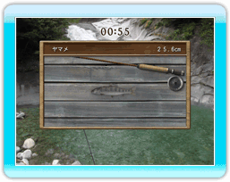
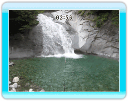
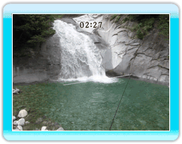
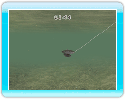
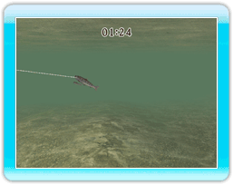

9 |
釣りかた |
 |

魚を釣るには、4つの操作を行います。全てが上手く 出来ると魚を釣り上げる ことができます。 |

●キャスティング キャスティングとは ルアーを投げる アクションです。 Wiiリモコンを立てて左右に 傾けると、同じ方向に ロッドが傾きます。 キャスティングする方向が決まった後、Aボタンを 押し続けるとキャスティング準備状態になります。 キャスティング準備状態のまま、Wiiリモコンを上から 振り下ろし、振り下ろした瞬間にさらにBボタンを 押すとキャスティングします。 ルアーはロッドが向いている方向に飛んでいきます。 ※Wiiリモコンの振りの速さで飛距離が変わります。 ※キャスティング準備状態を解除したい場合は、 Wiiリモコンを振らずAボタンを離してください。 |

●リーリング リーリングとはラインを 巻き取るアクションです。 キャスティング時と同様に、 Wiiリモコンを左右に 傾けるとロッドの向きを 変えられます。一方向に巻く だけではなく、ロッドを動かしながらいろいろな 方向にリーリングして、魚にアピールしましょう。 ※速いリーリングだと魚との距離が開いて しまいますので、遅いリーリングも使って 魚を引きつけてください。 |

●アワセ アワセとは魚の口にハリを 刺すアクションです。 魚がルアーに食いついて、 Wiiリモコンが「ブルッ」と 振動したときがアワセの タイミングになります。 このときWiiリモコンを振り上げてください。 振り上げるタイミングが遅いとアワセが甘くなり、 魚が暴れたときにハリが外れやすくなって しまいますので、注意してください。 ※アワセのタイミングは魚によって違いますので、 いろいろと試しながら釣りを楽しんでください。 |

●ファイト アワセに成功すると ファイトに移ります。 ファイト中の魚の 行動は3つです。 ・暴れる 魚が暴れているときは、 体を小刻みに動かしながら泳ぎます。 このときに、Wiiリモコンを垂直に立てることで、 魚の動きを抑えることが出来ます。 Wiiリモコンを立てているときに リーリングをすると一気にラインが張って、 ラインブレイクしてしまいますので 注意してください。 逆にWiiリモコンを寝かせてしまうと、 フックが緩んでフックオフしてしまいます。 ・走る 魚が走るときは、暴れているときより 速く直線的に泳ぎます。このときは、Wiiリモコンを 水平に寝かせてリーリングすることで、 ラインに負担を掛けることなく、魚の動きを 抑えることができます。 Wiiリモコンを寝かせるだけだと、ハリの刺さりが 緩んでしまいフックオフしてしまいます。 逆にWiiリモコンを立てるとラインが張って ラインブレイクしてしまいます。 ・休む 魚が休んでいるときは、動きがおとなしくなり 泳ぐ速度が極端に遅くなります。 このときは魚を手元へ引き寄せるチャンスなので、 リーリングしてください。そのまま魚を放っておくと せっかく減らした体力が一気に回復してしまいます。 Wiiリモコンを立てたままにするとラインブレイク、 寝かせたままだとフックオフする危険があります。 |
 |
 |
 |